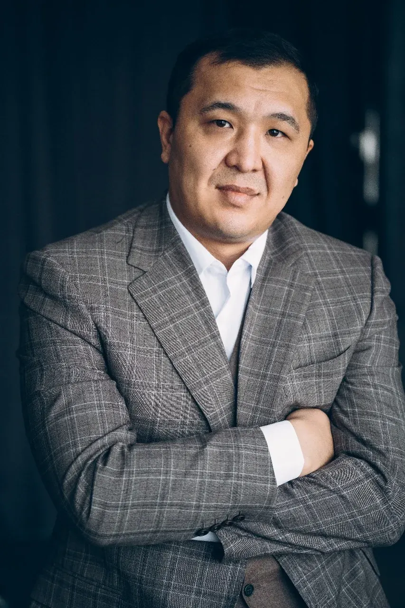
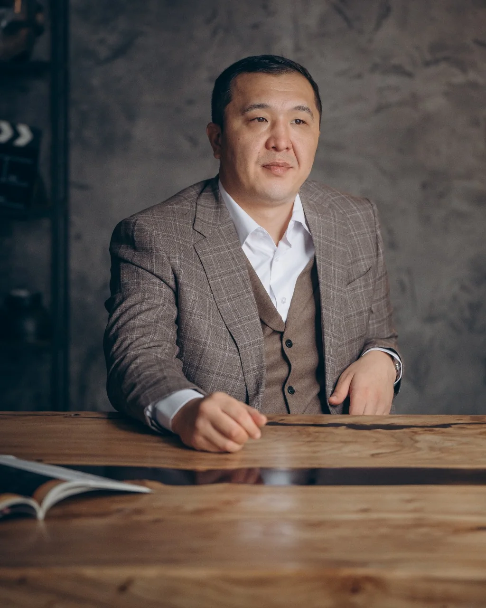
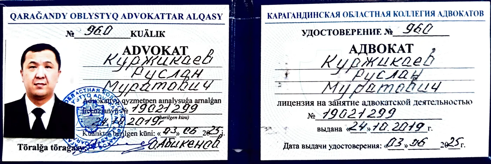

Общеуголовные преступления
Защита по делам о преступлениях против личности, собственности и общественной безопасности — вплоть до особо тяжких составов.
Обсудить делоАдвокат · Астана · лицензия МЮ РК №19021299
Куржикаев Руслан Муратович. Более 10 лет служил в органах прокуратуры и финансовой полиции — знаю, как строится обвинение, и знаю, как его разбирать. Теперь этот опыт работает на вашу защиту.
Срочная помощь · круглосуточно
Самое важное решается в первые часы. Даже при полной уверенности в своей невиновности не давайте показания без адвоката: отказ от дачи показаний — ваше конституционное право, он не означает ни признания, ни отрицания вины.
По уголовным делам отвечаю круглосуточно
Практика
Берусь за дела любой категории сложности и веду их на всех стадиях — от доследственной проверки и первого допроса до суда. Не ограничиваюсь участием в следственных действиях: провожу собственное адвокатское расследование и собираю доказательства защиты.
Защита по делам о преступлениях против личности, собственности и общественной безопасности — вплоть до особо тяжких составов.
Обсудить делоМошенничество, финансовые и хозяйственные составы. Четыре года в финансовой полиции — знаю, как строятся такие дела и где искать слабые места обвинения.
Обсудить делоВзяточничество, злоупотребление полномочиями и другие должностные составы. Защита госслужащих и руководителей.
Обсудить делоНезаконный оборот наркотических средств — от хранения до сбыта. В практике — прекращение дела о тяжком преступлении на стадии следствия.
Обсудить делоБерусь за гражданские споры, в которых работает моя следственная школа: деньги, имущество, действия госорганов.
Споры с банками по кредитам и ипотеке, незаконные действия при реализации залогового имущества.
Обсудить делоПризнание сделок недействительными, возврат недвижимости и транспорта — в том числе уже переоформленных на третьих лиц.
Обсудить делоОбжалование незаконных решений и действий, восстановление на работе, пенсионные и земельные споры.
Обсудить делоПри обращении по уголовному делу

Условия
Бесплатных консультаций не провожу. Платная консультация — это мотивированная, объективная оценка перспективы: вы сразу понимаете, есть ли смысл бороться, и не платите за бесперспективное дело.
Все условия и стоимость фиксируются двусторонним договором. Оплата — в день подписания.
Стоимость зависит от объёма, сложности и перспективы дела. После подписания договора она не может быть увеличена до завершения дела.
Защита и представительство по уголовным делам любой категории — общеуголовным, экономическим, коррупционным.
Результаты
уголовных дел в отношении моих доверителей прекращены до направления в суд — на стадии досудебного расследования, за отсутствием состава или события правонарушения.
Уголовное дело · ст. 296 УК РК
Доверителю грозило до 7 лет лишения свободы. Детальный разбор видеозаписей и материалов дела, очные ставки, ходатайства — выявлены противоречия в показаниях и отсутствие достоверных доказательств. Следствие согласилось с доводами защиты: дело прекращено за отсутствием состава преступления (п. 2 ч. 1 ст. 35 УПК РК).
Дело прекращеноГражданское дело · госорган
Доверитель отслужил в системе МВД более 20 лет и годами не получал положенные пенсионные выплаты. Суд признал действия Департамента полиции незаконными и обязал устранить нарушения — сегодня пенсия выплачивается.
Суд выигранСледственный суд
Мошенник завладел машиной доверителя, а полиция отказалась возбуждать дело. Через следственный суд добился отмены отказа — автомобиль возвращён.
Авто возвращеноГражданское дело · банк
Выявлены факты мошенничества при продаже залогового имущества сотрудниками банка. Суд признал действия банка незаконными и полностью отказал во взыскании долга.
Иск отклонёнГражданское дело · недвижимость
Недвижимость в Астане уже была переоформлена на третьих лиц. Через суд сделки признаны недействительными, оба объекта возвращены доверителю.
Имущество возвращеноИмена и детали дел не раскрываются: адвокатская тайна — часть профессии.
Обо мне
Адвокат · лицензия Министерства юстиции РК №19021299 · удостоверение №960

Специализируюсь на защите по общеуголовным, экономическим и коррупционным делам любой сложности. До адвокатуры более 10 лет служил в органах: расследовал тяжкие и особо тяжкие преступления — незаконный оборот оружия и наркотиков, коррупционные и экономические составы.
Работу обвинения знаю изнутри — теперь этот опыт на стороне защиты. Он особенно значим в сложных делах с финансовой, экономической и коррупционной подоплёкой.
Документы
Право на адвокатскую деятельность подтверждено государственной лицензией — бессрочной и неотчуждаемой.
№19021299
Министерство юстиции РК · выдана 24.10.2019 · без ограничения срока действия
№960
Выдано 03.06.2025 · подтверждает статус адвоката

Вопросы
Даже при полной уверенности в своей невиновности ни под каким предлогом не давайте показания без своего адвоката. Отказ от дачи показаний — ваше конституционное право, и он не может расцениваться ни как признание, ни как отрицание виновности.
Позиция и подход по каждому делу индивидуальны. Линия защиты и поведения зависит от множества факторов: степени причастности, собранных обвинением доказательств, перспективы добычи доказательств невиновности и других важных обстоятельств.
Пока следователь ищет и закрепляет доказательства виновности, я не ограничиваюсь участием в следственных действиях: веду собственное расследование по сбору доказательств невиновности, используя весь комплекс предусмотренных законом мер и инструментов.
Точку в деле ставит суд или государственный орган — а там работают люди, которые могут ошибаться. Этот человеческий фактор не даёт мне морального права гарантировать положительный исход, даже когда я на 100 % уверен в деле. Гарантирую другое: добросовестный подход и высокое качество юридической помощи.
Контакты
Запишитесь на консультацию в WhatsApp или позвоните. По уголовным делам звонки принимаю круглосуточно.